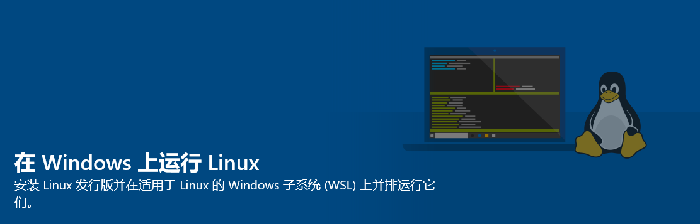
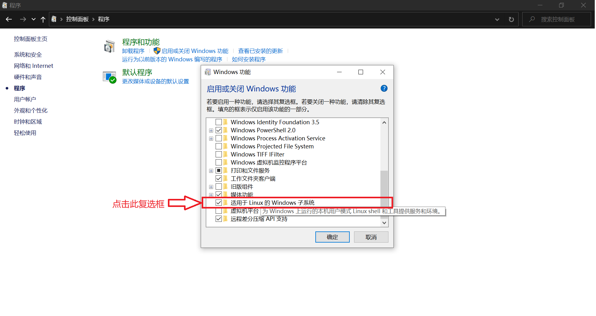
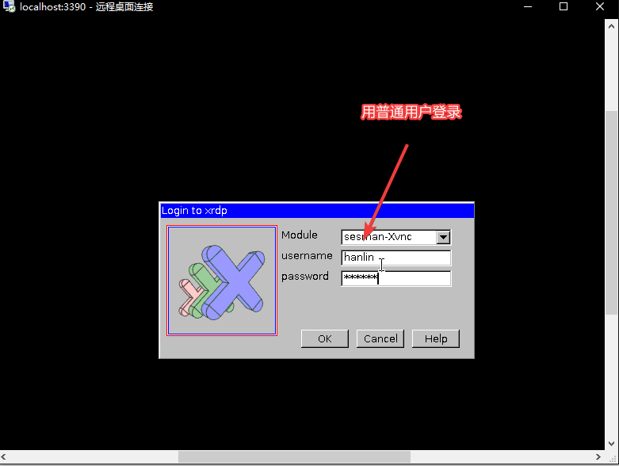
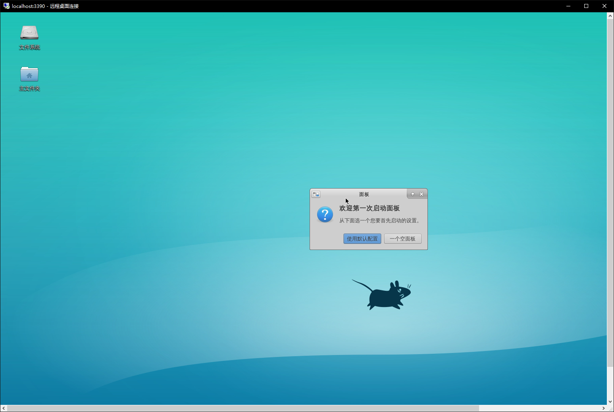
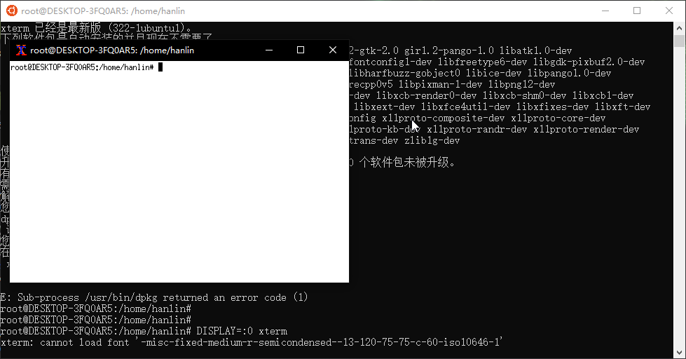
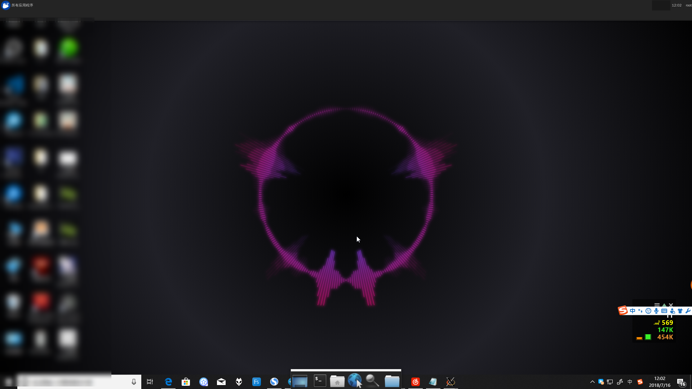

本章主要介绍了在 Windows 系统下使用 Windows Subsystem for Linux 运行 Linux 环境的方法．
引言[^ref1]
现在大部分学校的竞赛练习环境都是构建在 Windows 系操作系统上，但是在 NOI 系列赛中，已经用上了 NOI Linux 这个 Ubuntu 操作系统的修改版．
NOI 竞赛（自 2021 年 9 月 1 日）的环境要求如下．[^ref2]
| 类别 | 软件或模块 | 版本 | 备注说明 |
|---|---|---|---|
| 系统 | Linux 内核 | 5.4.0-42-generic |
64 位 x86 (AMD64) |
| 语言环境 | GCC（gcc 和 g++） |
9.3.0 |
C 和 C++ 编译器 |
| FPC | 3.0.4 |
Pascal 编译器（注：自 2022 年起，NOI 系列竞赛不再支持 Pascal 语言） | |
| Python 2 | 2.7 |
非竞赛语言 | |
| Python 3 | 3.8 |
非竞赛语言 | |
| 调试工具 | GDB | 9.1 |
|
| DDD | 3.3.12 |
GDB 的 GUI 前端 | |
| 集成开发环境（IDE） | Code::Blocks | 20.03 |
C/C++ IDE |
| Lazarus | 2.0.6 |
Pascal IDE | |
| Geany | 1.36 |
C/C++/Pascal（轻量级）IDE | |
| 文本编辑工具 | Visual Studio Code | 1.54.3 |
|
| GNU Emacs | 26.3 |
||
| gedit | 3.36.2 |
||
| Vim | 8.1 |
||
| Joe | 4.6 |
||
| nano | 4.8 |
||
| Sublime Text | 3.2.2 |
||
| 其它软件 | Firefox | 79.0 |
浏览器 |
Midnight Commander (mc) |
4.8.24 |
文件管理器 | |
| xterm (uxterm) | 3.5.3 |
终端 | |
| Arbiter-local | 1.02 |
程序评测工具单机版 |
考场环境与一般环境会有一系列差异：
- 命令行上的操作和图形界面上的操作会有差异．
- Linux 和 Windows 的差异，如对于大小写的敏感性差异．
- 不同编译器的行为（MSVC 和 GCC）和不同版本的编译器（Windows 上和 Linux 上的 GCC，32 位和 64 位的 Linux GCC，GCC 7 和 GCC 8 等）的行为，如对变量初始化和对数组下标越界的处理会有差异．
- 不同评测系统（洛谷和 Arbiter）的超时检查和内存限制检查会有差异．
这有可能导致一系列的尴尬情况：
- 想用Ctrl+C复制，结果退出了程序．
- 平时 AC 的程序模板到了 Linux 上就 WA．
为了防止考场上出现此类尴尬情况，我们必须要提前熟悉 Linux 系统的操作方法．
虽然 NOI 的官网已经放出了 NOI Linux 的 ISO 镜像，虚拟机的配置较为麻烦．且由于 NOI Linux 默认自带图形界面，无法保证在低配系统上流畅运行．
Windows 10 在一周年更新时推出了 Linux 子系统（WSL），在 2020 年 5 月更新中升级到了 WSL 2．截至 2020 年 6 月 1 日，WSL 已支持安装 Ubuntu、openSUSE Leap、Kali、Debian 等主流 Linux 分发版．但 WSL 并不支持 NOI 评测用的 Arbiter．
???+ note "什么是 Linux 子系统（WSL）" 适用于 Linux 的 Windows 子系统（英语：Windows Subsystem for Linux，简称 WSL）是一个为在 Windows 10、Windows 11 与 Windows Server 2019 上能够原生运行 Linux 二进制可执行文件（ELF 格式）的兼容层．
WSL 可让开发人员按原样运行 GNU/Linux 环境 - 包括大多数命令行工具、实用工具和应用程序 - 且不会产生虚拟机开销．
WSL 仅在 64 位 Windows 10 版本 1607 及以上、Windows 11 和 Windows Server 2019/2022 中可用．
启用 WSL[^ref3]
自动安装
???+ warning "Warning" 本部分适用于 Windows 10 版本 2004 及更高版本（内部版本 19041 及更高版本）或 Windows 11．
如果你正在使用 2004 以下版本或你的电脑不支持虚拟化，请阅读下面的手动安装一节．
如果你正在使用 1607 以下版本的 Windows 10，你的系统不支持 WSL．
-
以管理员身份打开 Windows PowerShell（右击「开始」按钮，选择 Windows PowerShell（管理员）或 Windows 终端（管理员）)
-
输入
wsl --install，并等待所有组件自动安装完成．期间你可能需要重启你的计算机来启用必要的 Windows 功能． -
安装完成后，你可以在「开始」菜单或 Windows 终端的标签页中找到你安装的发行版．
-
接下来，请转到下面「配置分发版」一节完成其他设置．
手动安装[^ref4]
???+ warning "Warning" 下面介绍手动安装 WSL 的步骤．如果你已经完成了自动安装，请跳过此部分．
启用适用于 Linux 的 Windows 子系统
在安装适用于 WSL 的任何 Linux 分发版之前，必须在下述两种方法中选择一种，以确保启用「适用于 Linux 的 Windows 子系统」可选功能：
使用命令行：
-
以管理员身份打开 PowerShell 并运行：
```powershell Enable-WindowsOptionalFeature -Online -FeatureName Microsoft-Windows-Subsystem-Linux
如果你只想要使用 WSL 1 请跳过此步骤
Enable-WindowsOptionalFeature -Online -FeatureName VirtualMachinePlatform ```
-
出现提示时，重启计算机．
使用图形界面：

-
打开「控制面板」
-
访问「程序和功能」子菜单「打开或关闭 Windows 功能」
-
选择「适用于 Linux 的 Windows 子系统」与「虚拟机平台」
-
点击确定
-
重启
安装内核更新包
如果你想要使用 WSL 1, 请跳过此步骤．
下载 适用于 x64 计算机的 WSL2 Linux 内核更新包 并安装．
设置 WSL 默认版本
绝大部分情况下，建议使用 WSL 2． WSL 1 与 WSL 2 的区别，请见 比较 WSL 2 和 WSL 1
??? note "关于 systemd" WSL 1 完全不支持 systemd（这意味着一些需要 systemd 的功能无法实现或需要其他替代方案）．WSL 2 已经内建对 systemd 的支持．如果需要使用 systemd，而当前运行的发行版没有配置为启用 systemd，可参考 WSL 中的高级设置配置．
# 将 WSL 默认版本设置为 WSL 2
wsl --set-default-version 2
安装 WSL 分发版

进入 Microsoft Store，搜索「Ubuntu」，然后选择「Ubuntu」，点击「安装」进行安装．也可打开 Ubuntu 的商店页面．
???+ warning "Warning" Microsoft Store 的 Ubuntu 随着 Ubuntu 的更新而更新，因此内容可能会有所改变．如果想获取稳定的 Ubuntu 长期支持版，可以在 Microsoft Store 安装 Ubuntu 的 LTS 版本．
配置分发版[^ref5]
本章以 Windows 自动安装的 Ubuntu 为例．
运行 Ubuntu
打开「开始」菜单找到 Ubuntu 并启动，或使用 wsl 命令从 Windows 命令行启动．
可以为 Ubuntu 创建应用程序磁贴或固定至任务栏，以在下次方便地打开．
初始化
第一次运行 Ubuntu，需要完成初始化．
Installing, this may take a few minutes...
等待一两分钟时间，系统会提示创建新的用户帐户．
Please create a default UNIX user account. The username does not need to match your Windows username.
For more information visit: https://aka.ms/wslusers
Enter new UNIX username: chtholly
输入完用户名以后会提示输入密码．在 Linux 中，输入密码时屏幕上不显示文字属于正常现象．
Enter new UNIX password:
设置好帐户名和密码后，WSL 就安装完成了．
Installation successful!
To run a command as administrator (user "root"), use "sudo <command>".
See "man sudo_root" for details.
chtholly@SENIORIOUS:~$
基础配置
初次安装好的系统不附带任何 C/C++ 编译器，需要手动配置环境．
$ gcc
The program 'gcc' is currently not installed. You can install it by typing:
sudo apt install gcc
$ g++
The program 'g++' is currently not installed. You can install it by typing:
sudo apt install g++
更换为国内软件源
Ubuntu 默认的软件源在国外．可以换成国内的软件源以加快速度，如 清华 TUNA 的软件源．
???+ warning "使用与自己系统版本匹配的软件源"
请在页面中寻找与自己系统版本相配的源（可使用 sudo lsb_release -a 查看 Ubuntu 版本）．
除非你知道你在做什么，否则不要使用与自己的系统版本不匹配的源！
使用以下命令更新软件和软件源：
$ sudo su # 执行这行指令后，终端提示符会从 $ 变成 #，执行下文的命令前注意关注提示符
[sudo] xxx 的密码：
# cp /etc/apt/sources.list /etc/apt/sources.list.bak
# vim /etc/apt/sources.list
...（按 i 之后将上文的源右键粘贴进去，编辑完后按 Esc，再输入 :wq 和回车）
# apt update
# apt upgrade -y
# exit
exit
$
安装中文环境
# apt install language-pack-zh-hans -y
# apt install fontconfig -y
# apt install fonts-noto-cjk fonts-wqy-microhei fonts-wqy-zenhei -y # 中文字体
# dpkg-reconfigure locales
此时会进入一个设置菜单，不用管，直接回车．
下一个菜单中选择 zh_CN.UTF-8 回车．
Default locale for the system environment:
None
C.UTF-8
en_US.UTF-8
[zh_CN.UTF-8]
<Ok> <Cancel>
之后关闭 WSL 并重启，系统就会变成中文．
再依次输入下列命令，把 man 帮助页替换为中文．[^ref6]
# apt install manpages-zh
# sed -i 's|/usr/share/man|/usr/share/man/zh_CN|g' /etc/manpath.config
可以用 man help 测试．
安装编译环境[^ref7]
# apt install -y build-essential vim ddd gdb fpc emacs gedit anjuta lazarus
GUIDE 的安装请参考 Debian 或 Ubuntu 下 GUIDE 的安装．
这里安装的是基础 + NOI 官方要求的环境，如有需要可以用 sudo apt install <程序名> 来安装其它软件包．
若想安装其他版本可以参考 Debian 官方的 包管理手册．
以下为一个示例程序：
$ vim cpuid.cpp
...
$ g++ -Wall cpuid.cpp -o cpuid
$ ./cpuid
AMD Ryzen 5 1400 Quad-Core Processor
???+ note "Note" Linux 环境下可执行文件可不带扩展名，运行方式参见上方命令．
进阶操作
使用 WSLg 运行 GUI 程序
如果你使用 Windows 10 19044 及以上版本或 Windows 11，则可以使用 WSL 2 提供的集成的桌面体验．该功能允许你直接安装并启动 Linux 桌面程序而无须其他配置．
参见 在适用于 Linux 的 Windows 子系统上运行 Linux GUI 应用
安装图形环境，并使用远程桌面连接
如果你使用的版本尚不支持 WSLg, 可以尝试使用以下指南开启图形界面功能．
以下以 Xfce 为例．
如果只想安装 Xfce，可以执行以下命令：
$ sudo apt install xfce4 tightvncserver -y
如果除 Xfce 外想要更多的软件，可以执行以下命令：
$ sudo apt install xubuntu-desktop -y
图形环境文件较大，下载解包需要一定时间．
配置 xrdp：
$ sudo apt install xrdp -y
$ echo "xfce4-session" >~/.xsession
$ sudo service xrdp restart
为了防止和计算机原有的远程桌面冲突，需要更换默认端口．

运行命令 sudo sed -i 's/port=[0-9]\{1,5\}/port=otherport/' /etc/xrdp/xrdp.ini，其中 otherport 为其他端口（如 3390）．
[globals]
...
port=3390
运行 sudo service xrdp restart，然后去开始菜单，用 localhost:otherport 来访问．


使用 Xming 连接
进入 Ubuntu 环境，安装 xterm：
# apt install xterm -y
退出 Ubuntu．
从 Xming X Server 下载地址 下载最新的 Xming Server，然后安装：

如果安装完后忘记勾选 Launch Xming，需在开始菜单里打开 Xming：

之后再回到 Ubuntu，键入如下指令：
$ DISPLAY=:0 xterm

如果使用了 xfce4，可以在弹出的窗口中使用如下命令激活 xfce4：
$ xfce4-session

运行结果如图．（在 Xming 中使用Ctrl+C就可以退出该界面．）

WSL 与 Windows 文件的互访问
Windows 下的硬盘被自动挂载至 Linux 环境下的 /mnt 文件夹下．
如 C 盘在 WSL 下的路径为 /mnt/c
PS C:\Users\chtholly> bash
/mnt/c/Users/chtholly$ echo "Hello world!" > hello
/mnt/c/Users/chtholly$ exit
PS C:\Users\chtholly> cat hello
Hello world!
PS C:\Users\chtholly> echo "Welcome!" > welcome
PS C:\Users\chtholly> bash
/mnt/c/Users/chtholly$ cat welcome
Welcome!
另外，也可以从文件管理器访问 WSL 目录．在安装 WSL 后，可以在资源管理器的侧边栏中发现 Linux 项，在其中可以访问所有安装的发行版中的文件．
同样，也可以在资源管理器的路径或运行（Win+R）中直接输入 \\wsl$ 来转到 WSL 的目录．
也可以直接使用诸如 \\wsl$\Ubuntu\home\ 的路径访问其子文件夹．
配合 Visual Sudio Code 进行编辑
如果习惯在 Windows 环境下使用 Visual Studio Code 进行代码编辑，可以安装 VS Code 中的 Remote - WSL 插件，更方便地对 WSL 系统中的文件进行编辑．
通过 Remote - WSL，可以在 Windows 下的 VS Code 界面中直接对 WSL 子系统进行操作，更加方便地编辑子系统目录下的文件、更方便地使用终端进行调试．
通过在 WSL 中直接键入 code .，可以在该目录下直接唤出 Visual Studio Code，对于该目录下的文件进行编辑．
同时，可以通过类似 code filename 的命令，对于指定文件进行编辑．
在插件 Remote - WSL 的 Getting Started 页面，包含对于编辑操作的详细简介．
同时，也可以参考 Visual Studio Code 的官方文档中关于 WSL 的内容（Remote development in WSL），这篇文章包含从 WSL 安装到配合插件使用的全流程的更详细的介绍．
WSL1 升级为 WSL2
???+ warning "Warning" 请确认已经完成前面 WSL1 的安装步骤．
执行命令 wsl -l -v 可以看到 WSL 版本号是 1，需要执行升级，才能到 2．
-
启用「虚拟机平台」功能
使用 PowerShell 以管理员身份运行：
shell dism.exe /online /enable-feature /featurename:VirtualMachinePlatform /all /norestart然后 重启电脑．
-
下载 Linux 内核更新包
- x64 的内核更新包．
- ARM64/AArch64 的内核更新包．
-
设置分发版版本
执行命令：
wsl --set-version <分发版名称> <版本号>如：将 Ubuntu 18.04 设置为 WSL 2 的命令为
wsl --set-version Ubuntu-18.04 2这一步比较耗时，执行完成后通过命令
wsl -l -v来检查升级是否成功．
FAQ
参见：常见问题，WSL 2 常见问题解答
-
如何在子系统下进行 xxx？
可以用自带命令行，或者使用图形界面． 比如说 vim，在命令行中键入
man vim，会给出一份详尽的使用方法． 亦可使用vim --help．关于命令行，可阅读 命令行
-
对系统资源的占用量？
这个系统和 Windows 10 共用 Host，所以理论上是比虚拟机占用小的．
外部链接
- 关于适用于 Linux 的 Windows 子系统
- Ubuntu 镜像使用帮助，清华 TUNA
- Dev on Windows with WSL（在 Windows 上用 WSL 优雅开发）
- GitHub 上的 Awesome-WSL
- 排查适用于 Linux 的 Windows 子系统问题
- WSL1 升级为 WSL2
参考资料与注释
[^ref1]: 洛谷日报 #6
[^ref2]: NOI Linux 2.0 发布，将于 9 月 1 日起正式启用！
[^ref3]: 安装 WSL, Microsoft Docs
[^ref4]: 旧版 WSL 的手动安装步骤
[^ref5]: WSL-Ubuntu 维基，ubuntu wiki
[^ref6]: Ubuntu 的 man 命令帮助如何设置中文版，Frank 看庐山，2017-06-09
[^ref7]: Run Bash on Ubuntu on Windows, Mike Harsh, 2016-05-30, Windows Blog